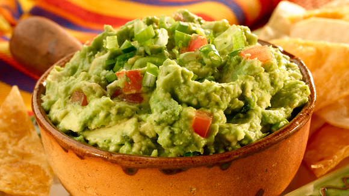

1. Guacamole
- In a medium bowl, mash together the avocados, lime juice, and salt.
- Mix in onion, cilantro, tomatoes, and garlic.
- Stir in cayenne pepper.
- Refrigerate 1 hour for best flavor, or serve immediately.
Watch it being Made
2. Pav Bahji
- Boil the cauliflower, peas and carrots till they are soft. Drain out the excess water.
- Heat the butter in a large pan, add the onion and capsicum and sauté for 2 minutes. Then, add the prepared chilli-garlic paste and sauté till the onion softens.
- Add the tomatoes and simmer till the oil separates. Add the turmeric powder, chilli powder, pav bhaji masala, black salt and salt and cook for 2 to 3 minutes.
- Add the boiled vegetables and potatoes and mash thoroughly using a potato masher, adding ½ cup of water if required.
Watch it being Made